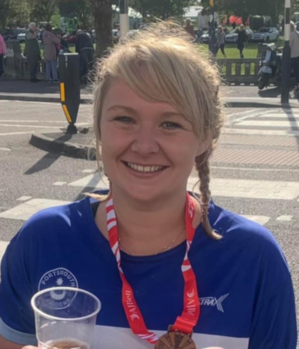
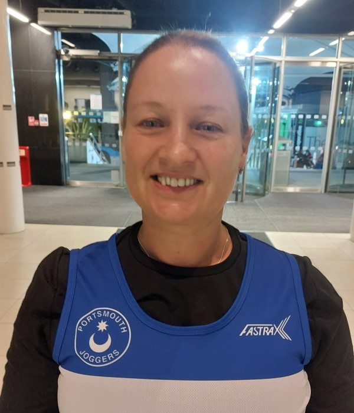
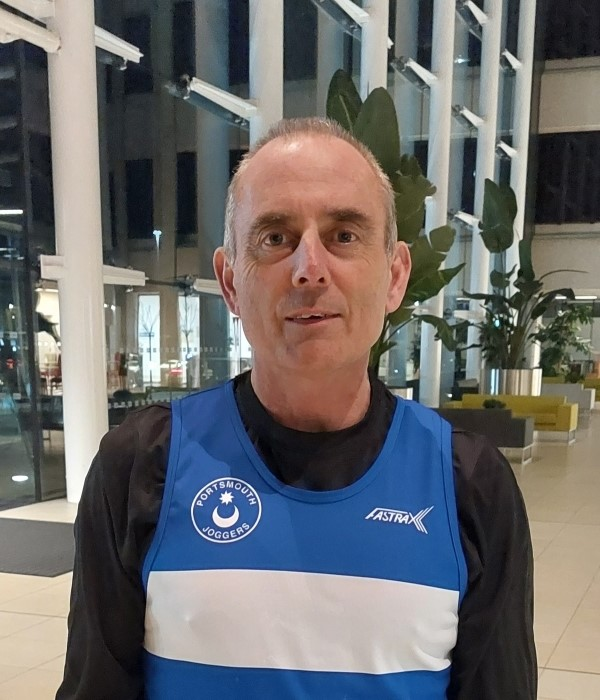

Our Running Groups
We have multiple running groups that focus on different speeds and distances, so regardless of where you are on your running journey there's a group that you can run with.
Runners are welcome to move between groups at any time, and you can choose which group to run with at each session based on what works best for you. If your goals change, no problem! If you want to try something different, that's great! We're all here to support each other and have fun.
The key on the right shows the relative group speeds. Point to a group you're interested in to find out more.
In addition to the groups detailed here we sometimes have specific running groups for events such as the Great South Run.
Racers
Tony Conway and Kate Lewis have the pleasure of leading the Whacky Racers.
 Kate's been running for around 12 years and joined PJC when she moved to Portsmouth in 2019. She
liked the club so much that she became the club's Chair in 2024. Kate's an England Athletics (EA) qualified
Leader in Running Fitness, and also the club's Hampshire Road Race League Ladies' Team captain!
Tony has been a member of PJC since 2002, having taken up running after leaving the Navy. He is an
extremely experienced runner, having completed over 100 marathons!
Kate's been running for around 12 years and joined PJC when she moved to Portsmouth in 2019. She
liked the club so much that she became the club's Chair in 2024. Kate's an England Athletics (EA) qualified
Leader in Running Fitness, and also the club's Hampshire Road Race League Ladies' Team captain!
Tony has been a member of PJC since 2002, having taken up running after leaving the Navy. He is an
extremely experienced runner, having completed over 100 marathons!
The Racers are the speediest group at PJC, and our schedule is typically:
-
Tuesdays: Speed work, such as 800 metre reps, pyramids, or hill reps.
-
Thursdays: A longer run, usually between 7-9 miles.
The group pace is between 7:30-8:30 minutes per mile (4:40-5:15 minutes per km), with some opportunities for going faster too, for
those who wish to stretch their legs out. We regularly regroup, and faster runners will loop back so that we all
stay together.
Starting in January, we typically target our training towards running a spring marathon, working to a
structured plan to build endurance and stamina. You are, of course, welcome to join in whether you are signed up
to a spring marathon or not! 😀
Whatever we're doing, we always aim to have fun, so come give us a try!
Pacers
Led by Pete Birch
Pete joined Portsmouth Joggers in early 2016 to train for the Great South Run, with the initial plan
of running it, checking it off his list, and stopping. However, here he is, 9 years later, leading a group
after completing 4 marathons, 1 Ultra, and various other Races.
The PJC Pacers are positioned just behind the Whacky Racers in terms of speed within the club's training
structure. We often train as one group, especially during our Tuesday speed work sessions.
- Tuesdays: Speed work. We go through a series of speed work sessions designed to give your running that extra
kick. Anyone can join in these sessions, as the pace is determined by your own race goals.
- Thursdays: We typically run 6 to 8 miles (10 to 13 km) at a group pace of 8:30 to 9:00 minutes per mile
(5:15 to 5:40 minutes per km). The goal is to be able to maintain this pace without pushing yourself to
your maximum effort. It's all about building up stamina.
- Weekends: Long slow runs (LSRs) usually with a mix of Pacers and Whacky Racers. These will range from 10
miles up to 20 miles during marathon training blocks. Pace for these will be slower than a Thursday session,
aim for 2 to 3 minutes per mile slower than your 5 km pace.
Pace Cadets
Led by Gina Reeve and Richard Sullivan

Gina joined Portsmouth Joggers in 2022 and is an England Athletics qualified Leader in Running Fitness
(LiRF)
Richard has been a member since 2017.
The Pace Cadets training sessions are structured to cater to a variety of running needs and goals.
- Tuesdays: Gina leads interval and speed sessions. These workouts are designed to improve pace and endurance,
and all paces are welcome.
- Thursdays: Richard leads longer runs, typically ranging from 5 to 7 miles. These runs are paced between 9 to 10
minutes per mile (5:30 to 6:15 minutes per km), providing a steady and enjoyable run for all participants.
Special Training: In the summer, the Pace Cadets usually embark on a 14-week training plan for the Great South
Run (GSR). Our goal is to help members complete the race in a target time of between 1 hour 20 minutes and 1
hour 40 minutes. We may train for other events during the year, depending on what group members are looking to
achieve.
Group Dynamics: The Pace Cadets are positioned between the Pacers (faster group) and the Inbetweeners (slower
group). This allows for a natural progression as members improve their pace. We often combine with the
Inbetweeners on Tuesdays, as pace differences are less critical, and occasionally on Thursdays for longer runs.
Join us for a supportive and motivating running experience, whether you're looking to improve your speed,
increase your distance, or train for a specific event. We look forward to running with you!
Endurance
Led by Teresa Baverstock and Phil Hoy

Teresa has been a member of PJC for 15 years and in this time has completed around 80 marathons and ultras, she has a background in sports coaching and holds a BSc in Sports and Exercise Science along with an England Athletics (EA) Leader in running fitness qualification.

Phil is a very experienced runner having been running for over 20 years. In this time he has completed around 150 marathons and ultras
including representing England in the age group marathon championships.
The Endurance group offers steady paced 6 to 7 mile (10 to 11 km) runs on both Tuesday and Thursday evenings with the bulk of the group running at around 9:00 to 9:30 minutes per mile pace (5:40 to 6:00 minutes per km).
There are opportunities for faster runners to extend their distance and pace through loops, typically running faster than 8 min/miles (5 min/km). The focus is on keeping the group moving while accommodating a range of paces.
During the lead-up to targeted races:
- Thursdays: may incorporate longer interval training sessions, and
- Weekends: may include a long slow run.
Inbetweeners
Led by Steve Hyson and Tony Quinn
Steve started running when he retired in 2018 and joined PJC in late 2019. He is an EA qualified Leader in
Running Fitness and started leading The Inbetweeners in January 2022.
Tony's introduction to running was completing the couch to 5k programme on his own! He's been an active group leader since he completed his Leader in Running Fitness (LiRF) and Coach in Running Fitness (CiRF) qualifications in 2019.
The inbetweeners is for those running at a pace of around 6:15 to 6:45 minutes per km (10:00 to 10:50 minutes per mile), i.e. you can do parkrun (5 km) in around 32 / 33 mins, though anyone is welcome run with the group regardless of their pace as we all look out for each other whilst running.
- Tuesdays: Interval training of some type which lasts an hour and normally covers 6.5 to 7 km (4 to 4.5 miles)
- Thursdays: A base run of 8 to 9 km (5 to 5.5 miles). Occasionally the group joins up with other groups for a joint run, typically this is when we do an
away run
i.e. the groups choose somewhere else to run other than our home location of Lakeside.
Steve and Tony do a sixteen week running schedule which they share with the group and welcome any suggestions or ideas of what to include in this schedule.
The group also joins-in with the annual training plan in preparation for October's Great South Run.
Next Step
Led by Sue Clarke and Sue Hyson
 Sue Clarke joined Portsmouth Joggers in 2016 via the Couch to 5K group as she
wanted to lose weight, and very quickly recognised the mental health benefits of running. She's now an EA
qualified Leader in Running Fitness, and as well as a group leader she's Deputy
Chair and Welfare Officer for the club.
Sue Clarke joined Portsmouth Joggers in 2016 via the Couch to 5K group as she
wanted to lose weight, and very quickly recognised the mental health benefits of running. She's now an EA
qualified Leader in Running Fitness, and as well as a group leader she's Deputy
Chair and Welfare Officer for the club.
 Sue Hyson joined PJC in 2019 after she completed the 5K Race for Life because she wanted something to encourage her to continue running. She's now an EA qualified Leader in Running Fitness and and as well as a group leader the club Secretary.
Sue Hyson joined PJC in 2019 after she completed the 5K Race for Life because she wanted something to encourage her to continue running. She's now an EA qualified Leader in Running Fitness and and as well as a group leader the club Secretary.
Next Step are the ideal group for those who have completed Couch to 5K and want to continue their running journey, or for those who want to enjoy a chatty run at a pace of approx 7:30 minutes per kilometre (12 minutes per mile)
- Tuesdays: Each alternate Tuesday we do interval training (designed to help you increase stamina and staying power) and the following week we do a 4 to 5 mile (6 to 8 km) run (the same as Thurdays).
- Thursdays: we typically run 4 to 5 miles (6 to to 8 km). The group aim to run this continuously without stopping to walk.
Social Group
The Social Group is led on Tuesdays by Ally Smith and Bertie Shepherd and on Thursdays by Celia Oxley.
This group is mainly aimed at slower runners who like to run and chat and for those that need to walk from time to time. We do loop backs, if needed, to keep the group together.
It's an ideal first step for those people who are not quite sure if they are confident enough to move on to the Next Step after completing Couch to 5K.
During the summer months we venture out to explore the beautiful countryside and seafront that we are fortunate enough to live near to.
If you fancy a run/walk or gentle plod with a group of like-minded people then why not come and join us.
Early Birds
Led by Mandy Mapplebeck
Mandy
For those who cannot make the 7 p.m. start, the Early Birds run from Lakeside at 6 p.m.
We are very much a mixed paced bunch, who enjoy a social run with no emphasis on speed. There is lots of chat and plenty of laughter.
Typically we run 5 to 6 km on Tuesdays and 6 to 8 km on Thursdays, with the speedier peeps looping to keep us all together.
If you occasionally need an earlier run, come and join the early birds, you can be assured of a warm welcome.